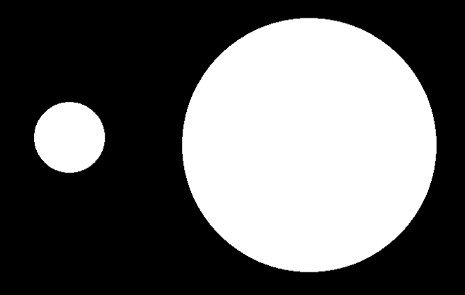
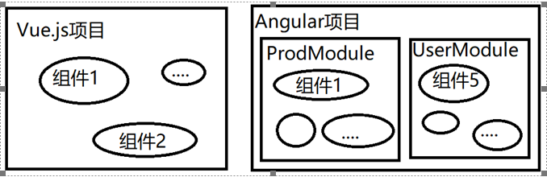
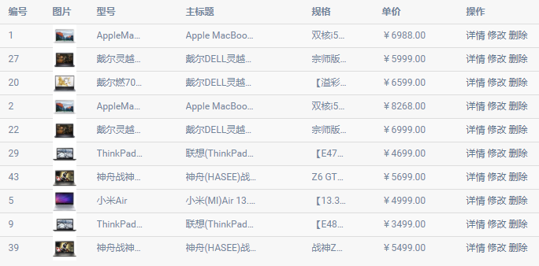

01.前言

CSS => Less/SCSS
JS => ES => TS(TypeScript)
DOM => jQuery => MVVM
CSS => SCSS(编译器)
JS => TS(编译器)，是JS的超集
1.设计原则
(1)YAGNI
You Aren't Gonna Need It，你不会需要它；不写不需要的功能
(2)KISS
Keep It Simple and Stupid，让你的代码越简单/傻瓜越好
(3)OCP
Open Close Principle，开闭原则，对外界修改封闭(不允许修改已有代码)，对外界的扩展开放
(4)High Cohesion，Low Coupling
高聚合，低耦合；功能相关代码紧密在一起；功能不相干代码拆分越明确越好
(5)迪米特法则/最少知识原则
一个对象/组件，数据/操作越少越好
2.Angular
Angular，由Google在2009年创建的MVVM框架，适用于中大型的企业级SPA应用。
V1.x官网：https://angularjs.org/ Angular.js用JS编写
V2.x~8.x官网：https://angular.io/ Angular用TS编写
V2.x~8.x中文网：https://angular.cn/
提示：V1到V2的升级变化非常大！ V1支持SCRIPT直接引入和脚手架方式；V2开始只支持脚手架方式。
注意：Angular 8.x要求Node.js版本必须是10.9以上！
提示：如果使用NPM从官方网站下载NPM包总是失败，可以把默认下载地址改为国内淘宝网镜像：
查看当前下载地址： npm config get registry
默认值为： https://registry.npmjs.org/
修改为淘宝网NPM镜像： npm config set registry=https://registry.npm.taobao.org/
3.创建第一个Angular项目
①安装Node.js和NPM
Node.js版本必须>=10.9
②安装全局的Angular脚手架工具
npm i -g @angular/cli
默认会在C:\Users\web\AppData\Roaming\npm目录下安装ng.cmd可执行文件及其相关文件
③运行全局脚手架，创建一个Angular空白项目
ng new myngapp01
此步需要联网从NPM官网下载第三方模块，如果总是失败可以拷贝他人下载好的空白项目
④进入项目根目录，运行该项目（Node.js项目）
npm start 或者 ng serve
Vue.js项目的主配置文件： vue.config.js
Angular项目的主配置文件： angular.json
ES6中有“模块”的概念： export/export default、 import..from..
Vue.js中无自己的“模块”概念——项目是由自定义组件构成；
Angular中有自己的“模块”概念——项目是由自定义组件构成，每个组件都要放在一个特定的Module中

4.Angular项目引导启动流程
①根据angular.json查找系统运行入口文件：main.ts
②main.ts启动主模块： AppModule
③在主模块中引导启动主组件：AppComponent
④主组件中声明了模板和样式，最终渲染在index.html中 < app-root/ >
5.Angular核心概念之一 —— 组件
Component：组件，就是一段可以复用的页面片段，如轮播广告、手风琴、下拉菜单.......；每个组件内有 自己专用的HTML片段、CSS样式、JS数据和操作。
Component = Template + Style + Script
提示：Angular中每个组件(Component)必须处于某个模块(NgModule)中！！
自定义组件的步骤：
①创建一个ts文件
例如： src/app/myc01.ts
②ts文件中声明并导出一个class
@Component({
selector: 'app-myc01', //标签名
template: '我的组件01
' //组件模板
})
export class MyComponent01 { }
③在某个模块中声明该组件，否则无法使用该组件
@NgModule({ declarations: [ MyComponent01 ] })
④在当前模块内的其它组件的模板中使用该组件
//app.component.html
< app-myc01 >< /app-myc01 >
练习：创建一个自定义组件MyComponent02，其对应的元素为app-myc02；模板内容随意；试着在前面两个组件中使用这第三个组件
练习：创建一个自定义组件MyComponent03，其对应的元素为app-myc03；模板内容随意；试着在前面三个组件中使用这第四个组件
练习：创建一个文件夹myc05，其中自定义组件MyComponent05，其对应的元素为app-myc05；模板/样式独立出来都放在此文件夹下；试着在主组件中使用这个组件
提示：可以使用Angular脚手架提供的 ng g component 组件名 来自动的创建一个组件所需要的文件；若没有成功安装全局命令ng，也可以使用 npx ng g component 组件名 。 （NPX是Node.js安装包提供的一个命令，可用于执行node_modules下的可执行文件）
6.Angular核心概念之二 —— 数据绑定
Data Bingding：把脚本中的数据(称为Model模型)，绑定到HTML(称为View视图)，未来只要Model发生改变，则View自动更新。
Angular中数据绑定的呈现方式：
①插值语法/大胡子语法，绑定到innerHTML：{{ }}
< any >{{expression}}< /any >
②属性绑定：[ ]
< any [attr]="expression" >
< any attr="{{expression}}" >
③事件绑定：( )
< any (event)="fn( )" >
注意：事件绑定中函数后的( )不能省略！
说明：(1)插值语法中可以使用算术运算吗？比较运算符？逻辑运算符？三目运算符？调用对象的方法吗？自增/自运算符？创建新对象吗——{{}}中不能出现new？
练习：使用数据绑定实现如下组件：myc11，购买数量增减
数据绑定相关的指令：
①循环绑定：*ngFor
< li *ngFor="let tmp of scoreList; let i=index;" >
{{i}} - {{tmp}}
< /li >
②选择绑定：*ngIf
③样式绑定：[ngStyle]、[ngClass]
7.课后任务
(1)比较Vue.js和Angular的不同
Vue.js Angular
插值表达式
属性绑定
事件绑定
循环指令
选择指令
样式指令
(2)创建组件，包含Model数据：productList: [ (),(),()...() ]，绑定到如下的表格中，要求：点击“删除”可以实现模型数据的删除功能
